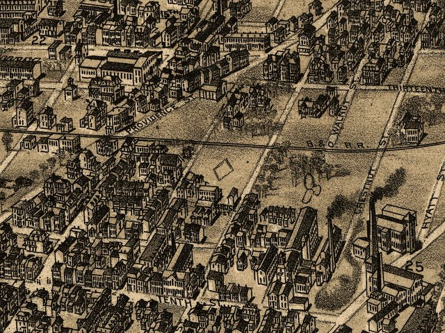

| Chester, Pennsylvania - 1885 |
|---|
 |
| The city of Chester, Pennsylvania
1885. O.H. Bailey & Co. CREATED/PUBLISHED Boston [1885] NOTES Perspective map not drawn to scale. Bird's-eye-view. Includes illus. and index to points of interest. REFERENCE LC Panoramic maps (2nd ed.), 751 |